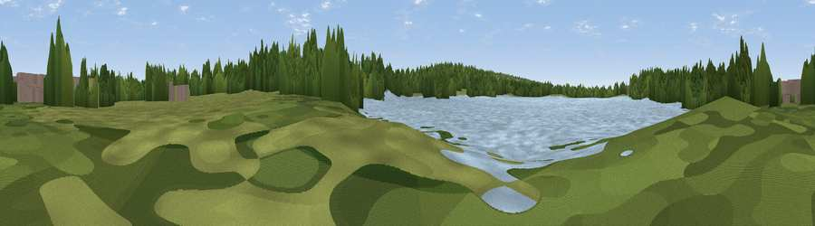

Viewpoint near Letchmore Heath
#44635 in England · top 65% of its area beats it · near Letchmore HeathThe view, rendered

A 360° render of this exact spot computed from the terrain model, tree cover and land cover — summer colours, afternoon light, calibrated against photographs of famous viewpoints. Real trees, hedges and buildings will differ in detail.
The panorama
Grey silhouette: terrain skyline in each direction (720 bearings, Earth curvature and refraction included). Dashed green: skyline with trees (+15 m) and buildings (+8 m) as obstacles. Blue strip: how far the ground is visible on each bearing.
Where the view opens
Wedge length = distance to the farthest visible ground on that bearing (vegetation-aware). Rings at 10, 25 and 50 km.
What fills the view
42% water · 32% woodland · 17% grassland · 6% built-up · 3% cropland
Angular shares of the visible panorama (visual magnitude), not map area. Landscape diversity 0.56 (0–1 Shannon).
Key numbers
More beautiful places nearby
The staircase of upgrades: each row has a higher view potential than everything closer. Driving times are estimates from straight-line distance, calibrated against real road routing — check an actual route before setting out.
| Place | Direction | Drive | Score |
|---|---|---|---|
| Caldecote Hill | SSW · 1 km | ~4 min | 37.9 |
| Wood Farm London Viewpoint | SSE · 3 km | ~7 min | 49.2 |
| Harrow on the Hill | S · 9 km | ~17 min | 60.7 |
| Viewpoint near Whipsnade | NNW · 28 km | ~44 min | 65.2 |
| Viewpoint near Tring Station | NW · 28 km | ~44 min | 68.5 |
| Beacon Hill | NW · 29 km | ~45 min | 74.1 |
| Viewpoint near Halton | WNW · 31 km | ~48 min | 74.3 |
| Coombe Hill Monument | WNW · 33 km | ~51 min | 75.5 |
51.65232, -0.32430 · source: osm viewpoint · position refined by local search. Computed location — check access rights before visiting.